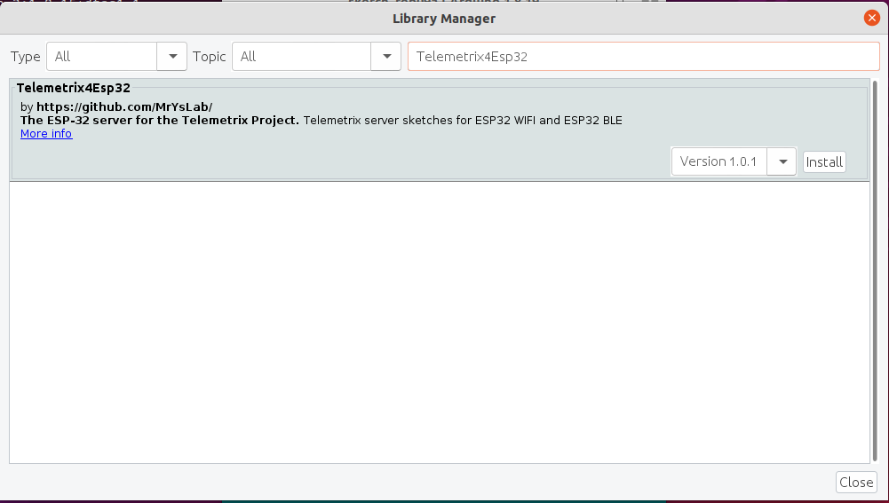
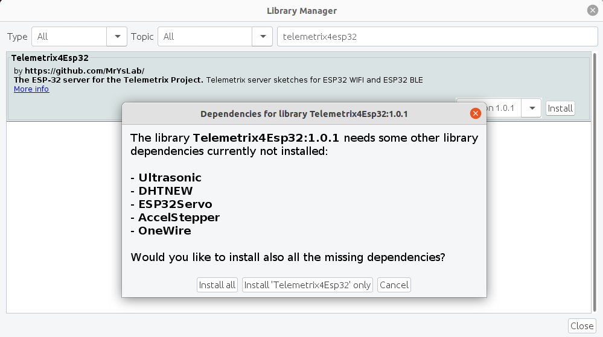
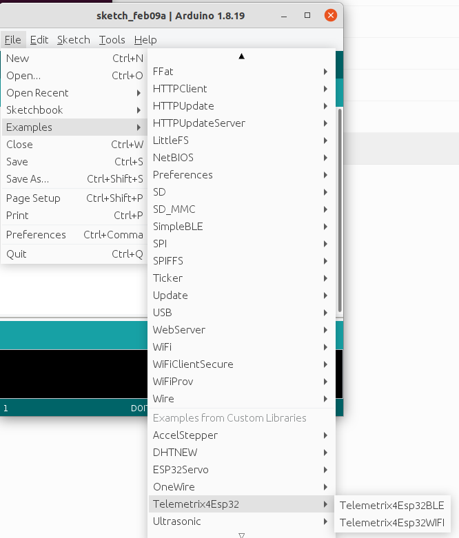
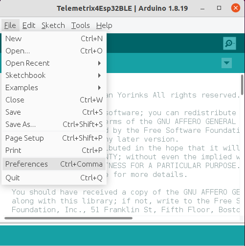
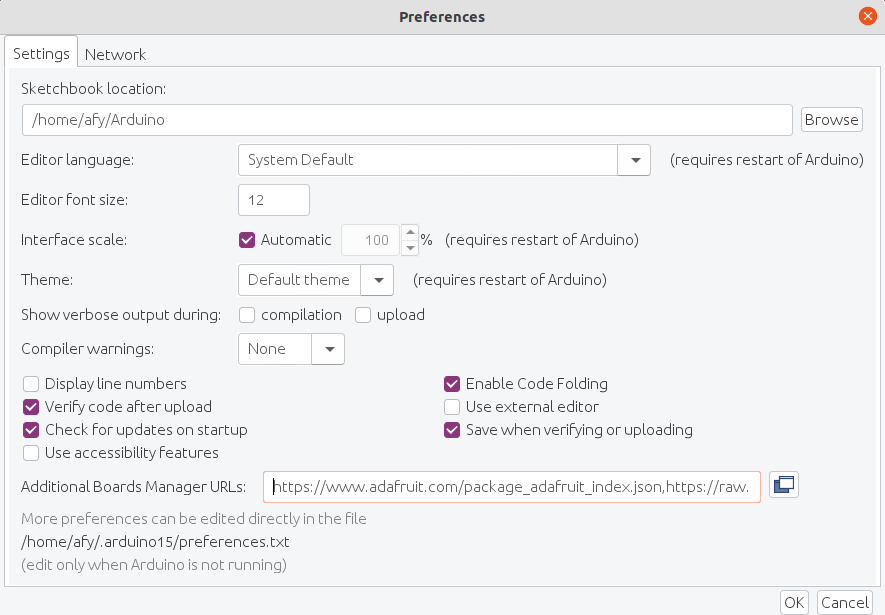
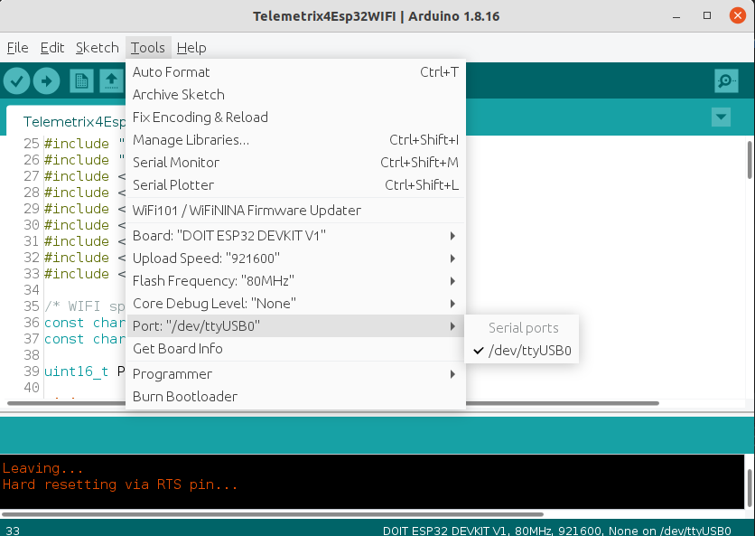
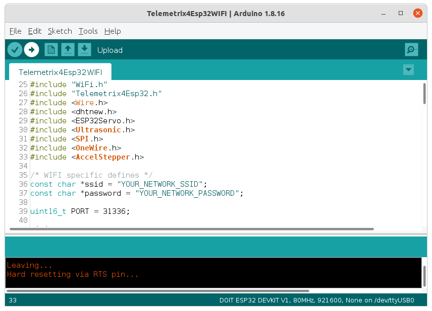
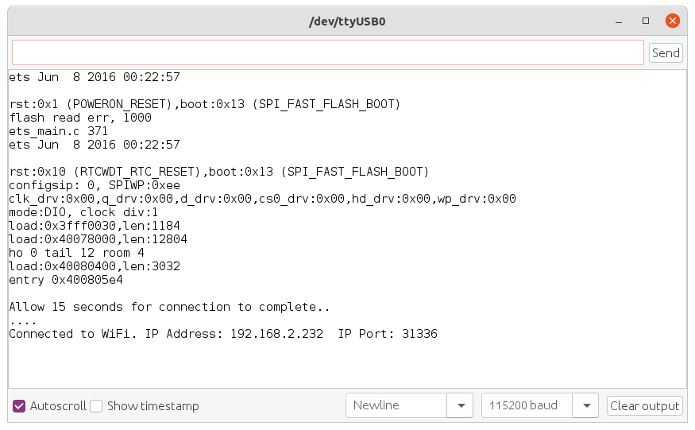

Installing the WI-FI and BLE ESP32 Servers#
Add The Telemetrix4Esp32 Library To The Arduino IDE#
Open the Arduino IDE and select Tools/Manage Libraries.

Enter "Telemetrix4Esp32 in the search box.

Click on the Install button. You will be prompted to allow the installation of additional libraries. Accept the installation for all.

Both the WI-FI and BLE servers are installed into the Arduino IDE from this single library, and you can select either server from the File/Examples menu.

Add The Arduino Core For ESP32 To The Arduino IDE#
The Arduino core for the ESP32 needs to be installed into the IDE to compile the server sketches.
To do so, select File in the main menu of the Arduino IDE and then select Preferences.

Copy the following line into the Additional Boards Manager URLs edit box:
https://raw.githubusercontent.com/espressif/arduino-esp32/gh-pages/package_esp32_index.json

Click the Ok button.
Select Either The WI-FI Or BLE Server Sketch For Compilation#
WI-FI Sketch Preparation Prior To Compilation#
Your router assigns the ESP32 device an IP address. To determine the device's IP address, you must first modify the sketch to indicate your network name (SSID) the password before compiling. Look for "YOUR_NETWORK_SSID" and replace that with the name of your network. Be sure to retain the quotation marks. On the following line, replace "YOUR_NETWORK_PASSWORD" with your network password, again including the quotation marks.
Uploading The Sketch#
Now, connect your ESP32 device to your computer and select the port for uploading using the Tools/Port IDE selection.

Next, click on the Upload button at the top of the Arduino IDE to compile and upload the sketch to ESP32.

When loading is complete, click on the Serial Monitor button in the upper right corner of the IDE. Set the speed to 115200, then press the reset button or re-power the ESP32.
The IP address assigned to the ESP32 is displayed.

If your ESP32 device has a Board LED, it will remain lit until the connection is successful, and then it extinguishes.
Note the IP address since you will need to include it when using one of the Python WI-FI APIs.
BLE Sketch Preparation Prior To Compilation#
No modifications to the sketch are necessary for BLE. Follow the Uploading The Sketch section above to install the sketch.
The Board LED behaves differently for BLE. It will remain lit until the Python application successfully connects to the ESP 32 device.
Copyright (C) 2022 Alan Yorinks. All Rights Reserved.